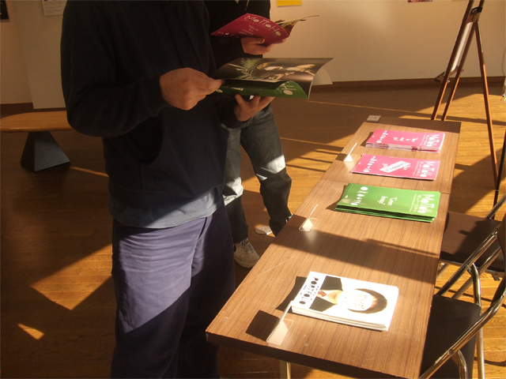

今回の展覧会のメインとなるターゲット層は、私と同じ学科に属する人たちであり、
つまりは芸術を専攻し研究制作を行う人たちであった。
なぜ彼らを誘致する点にいたったかという部分に関しては
前述した主体性をもって欲しい部分もあり、そして何よりも
現代アートに纏わる哲学的思考を養ってもらいたいということがあったからである。
今回の展覧会のメインとなるターゲット層は、私と同じ学科に属する人たちであり、
つまりは芸術を専攻し研究制作を行う人たちであった。
なぜ彼らを誘致する点にいたったかという部分に関しては
前述した主体性をもって欲しい部分もあり、そして何よりも
現代アートに纏わる哲学的思考を養ってもらいたいということがあったからである。
昨今の美術系大学生の作品傾向は割とアンニュイな要素をもっているようにも思える。
いわば、何も生み出されなかったことに対するアンチテーゼとしてのゼロ年代の制作像。
そしてそこから積極性をもったアート制作像も一切生まれてはこなかった。
私はそこに批判的な視点を持ち、そうした現状打破をかけるためにこの展覧会を企画した。
作品が生み出されて閲覧される環境が生成されたとき、
そこには生産者と消費者の２極化したものたちが存在することになる。
しかし生み出すことの出来ないゼロ年代の者たちにとって、
作品が生成された場所には、消費者と消費者という同一のものたちしか存在せざるを得ず
生み出すことの出来ない状況は一定化され、変化することができないままである。
消費者化した生産者について詳しく論述すると、いわば生産されたものを咀嚼をして
それを自分が生産できるものを生み出すことが出来ないということでもある。
噛み砕いた表現をすれば、ひとつのテーマの中でぐるぐるとループするところのものである。
そのままでは広がりをもつための消費を目的とした生産など不可能である。
それが今の「見飽きてしまった」アンニュイな要素を持つ作品制作傾向でもある。
どうしてもその現状を打破するために必要なことは、
拡がりをもった視点をもつことと、消費されるための芸術についてを考え直すことである。
それが今の生産者としての美術系大学生に課せられた使命・役割なのではないだろうか。
また、現在の生産者の問題と同様に消費者側にも問題点はある。
それはある興味の温床が出来てしまうと、そこから新たに抜け出すことに関して
だいぶ乏しくなっているのではないかという部分である。
興味の温床はある意味で自己を形成するコミュニティとして大事ではあるが
それには依存的な性質も持ち合わせ、そのコミュニティで形成されたものが
自分の見える景観としての「世界」だと錯覚してしまう危険性を孕む。
そこではいわゆる「悪い」消費者としての循環が生まれかねない。
消費者に徹する人たちは、自らの視点の限界を徐々に広げる必要がある。

以上、双方の問題点を取り上げてはみたが、もちろん双方が独自的に発展すれば苦はないが
そういう状況になかなかなれないのが現実問題として挙げられる部分である。
だからこそ、お互いがお互いを誘致する関係性をもち、
ひとつの「きっかけ」を生み出してあげる必要はあると私は考える。
私はその双方にとっての「きっかけ」としての「再起動展」ではあったのだが。
必ずしもすべての人間が美術に携わる必要はないかもしれないが、
その人の気付きとしての視点を呼び起こすきっかけの場を生成する必要は絶対だと思う。
それがその人にとって良いものか悪いものか、は別問題として。